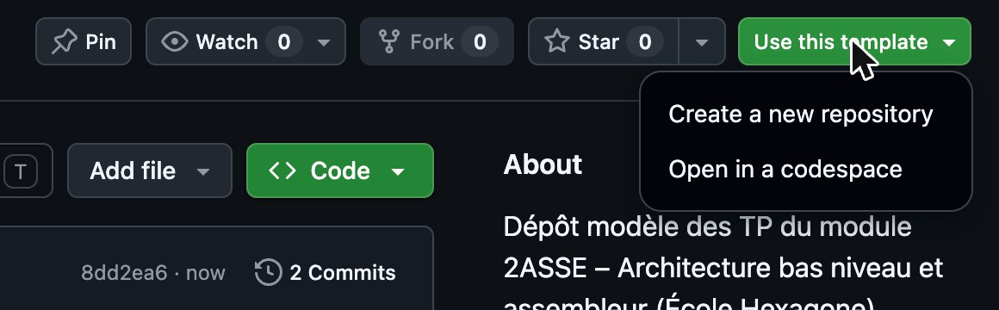
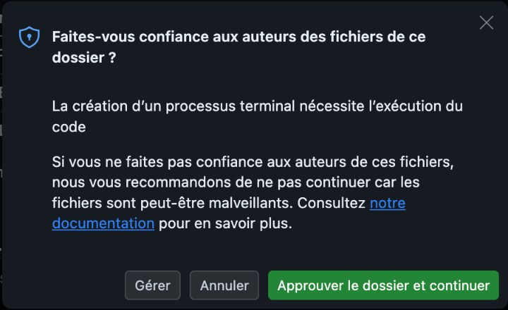
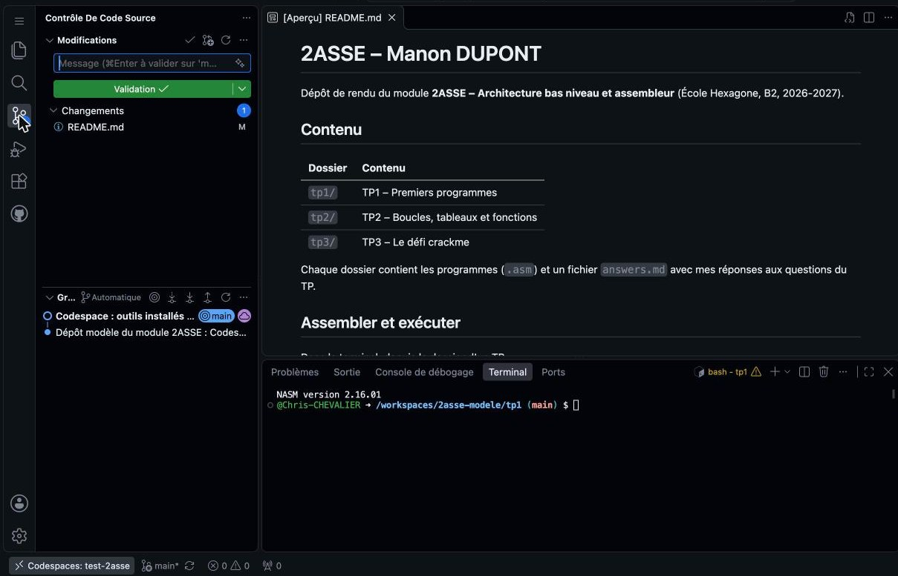

- Objectifs : assembler et exécuter vos premiers programmes x86-64, faire des calculs dans les registres, observer le processeur instruction par instruction avec GDB.
- Tout se passe dans votre Codespace : un Linux x86-64 dans le navigateur, avec NASM, ld et GDB déjà installés.
- Les programmes vont dans le dossier
tp1/de votre dépôt. Les réponses aux questions Q1 à Q8 vont danstp1/answers.md. - Faites un commit et poussez-le à chaque étape terminée. Le TP1 compte pour 15 % de la note du module. Rendu au plus tard le dimanche 3 janvier à 23h59, mais finissez-le avant le jeudi 3 décembre : le cours 2 s'appuie dessus.
0 Le dépôt et le Codespace
Les trois TP vivent dans un seul dépôt, créé à partir de mon modèle. Il contient déjà la configuration du Codespace, un Makefile par TP et le fichier de réponses du TP1.
Vous n'avez rien à installer sur votre ordinateur : un navigateur récent (Chrome, Edge, Firefox) suffit.
Créer votre dépôt
- Ouvrez le dépôt modèle 2asse-modele, cliquez sur Use this template puis Create a new repository :
- nom :
2asse-nom-prenom(avec votre nom et votre prénom) ; - visibilité : Private.

Use this template → Create a new repository. N'utilisez pas « Open in a codespace » : votre travail ne serait enregistré dans aucun dépôt.
- nom :
- Dans votre nouveau dépôt, ouvrez Settings → Collaborators, cliquez sur Add people et invitez Chris-CHEVALIER.
Ouvrir votre Codespace
- Sur la page d'accueil de votre dépôt, cliquez sur Code, onglet Codespaces, puis sur le bouton vert Create codespace on main. La première ouverture prend quelques minutes : le Codespace construit sa machine Linux et y installe NASM, ld et GDB.
- Un VS Code s'ouvre dans le navigateur, avec le
README.mdaffiché en aperçu. Une fenêtre demande « Faites-vous confiance aux auteurs des fichiers de ce dossier ? » : cliquez sur Approuver le dossier et continuer. Sans cela, le terminal reste bloqué.
Ce dossier est votre propre dépôt, créé à partir de mon modèle : vous pouvez l'approuver.
- Dans le terminal (en bas de l'écran), vérifiez les outils :
Vous devez lirenasm -v gdb --versionNASM version 2.16.01puisGNU gdb (Ubuntu 15.1…) 15.1. - Ouvrez
README.mdet remplacez « Prénom NOM » par vos prénom et nom. Pour modifier le fichier plutôt que son aperçu, cliquez sur son nom dans l'explorateur, à gauche.
- ouvrez le panneau Extensions dans la barre de gauche (Ctrl + Maj + X, ou Cmd + Maj + X sur Mac) ;
- cherchez x86 and x86_64 Assembly, de l'auteur 13xforever, puis cliquez sur Installer ;
- rouvrez votre fichier
.asm. Si les couleurs n'apparaissent toujours pas, cliquez en bas à droite sur le mode du fichier (« Texte brut ») et choisissez x86 and x86_64 Assembly.
bash .devcontainer/install.sh

Le panneau Contrôle de code source, ici avec un README.md modifié. Si votre VS Code est en anglais, les boutons s'appellent Commit et Sync Changes.
En ligne de commande, les mêmes actions s'écrivent git add -A, git commit -m "message" puis git push.
Seul ce qui est poussé sur GitHub compte pour le rendu.
GitHub et Codespaces appartiennent à Microsoft et relèvent du droit américain (Cloud Act) : des alternatives ouvertes existent, comme Codeberg, ou une machine virtuelle Linux sur votre ordinateur avec les mêmes outils.
- votre dépôt est privé et je suis invité comme collaborateur ;
nasm -vetgdb --versionaffichent leur version dans le terminal du Codespace ;- le
README.mdporte votre nom et ce commit est poussé sur GitHub.
1 Bonjour
Dans le terminal, placez-vous dans le dossier du TP avec cd tp1. Créez le fichier hello.asm avec la commande code hello.asm, qui l'ouvre dans l'éditeur, et recopiez le programme du cours :
; hello.asm : affiche "Hello World!" puis quitte
section .data
msg db "Hello World!", 10 ; texte ASCII + saut de ligne (10)
len equ $ - msg ; longueur : adresse fin - adresse début
section .text
global _start
_start:
mov rax, 1 ; appel système write
mov rdi, 1 ; 1er argument : afficher sur l'écran
mov rsi, msg ; 2e argument : l'adresse du message
mov rdx, len ; 3e argument : sur len octets
syscall ; le noyau exécute write
mov rax, 60 ; appel système exit
mov rdi, 0 ; 1er argument : code de retour 0
syscall ; exit lit le code de retour dans rdi
Assemblez-le, puis exécutez-le :
make hello
./hello
make hello lance nasm -f elf64 -g -F dwarf hello.asm -o hello.o puis ld hello.o -o hello. Ouvrez le Makefile pour le constater.
Modifiez ensuite hello.asm pour que le programme :
- affiche deux lignes :
Bonjour, je m'appellesuivi de votre prénom, puisJe découvre l'assembleur x86-64.; - utilise un appel
writepar ligne, avec deux messages et deux longueurs dans la section.data; - se termine avec le code de retour 42.
Pour vérifier le code de retour, tapez echo $? juste après ./hello : cette commande affiche le code de retour du dernier programme lancé.
Questions
Q1. Faites une copie de votre programme, puis supprimez-y les trois lignes de l'appel exit. Assemblez et exécutez cette copie. Que se passe-t-il ? Pourquoi ?
Q2. Dans le premier write, remplacez la longueur par 5. Que se passe-t-il ? Pourquoi ?
Indices
- Chaque message a sa propre longueur :
len2 equ $ - line2se place juste aprèsline2. - Le code de retour est l'argument de
exit: il va dansrdi. - Q1 : sans
exit, que trouve le processeur après la dernière instruction ? Revoyez le rôle deripet le cycle d'exécution.
./helloaffiche vos deux lignes etecho $?affiche42;- Q1 et Q2 sont répondues dans
answers.md, avec une explication et pas seulement une observation ; - vous avez fait un commit « Étape 1 : bonjour » et vous l'avez poussé.
2 Calculer
Un programme ne sait pas encore afficher un nombre. Il renvoie donc son résultat comme code de retour, que vous lisez avec echo $?.
compute.asm – Une expression
Écrivez le programme compute.asm. Il calcule (a + b) × c − d avec a = 12, b = 8, c = 4 et d = 35, puis renvoie le résultat comme code de retour.
Chaque opération est une instruction : le calcul ne doit pas être fait à la main.
square.asm – Un polynôme
Écrivez le programme square.asm. Il calcule x² − 2x + 1 pour x = 9 et renvoie le résultat.
La valeur 9 n'apparaît qu'une seule fois dans le programme (mov rbx, 9) : changer cette ligne doit suffire pour calculer avec un autre x.
Question
Q3. Modifiez temporairement compute.asm pour qu'il renvoie 300. Quel code de retour affiche echo $? ? Pourquoi ?
Indices
imul rax, rbxmultiplieraxparrbxet range le résultat dansrax.- Pour
square.asm, utilisez un registre par résultat intermédiaire :raxpour x²,rcxpour 2x. - Q3 : sur combien de bits le code de retour est-il transmis ?
computerenvoie45etsquarerenvoie64;- avec
x = 5,squarerenvoie16sans autre modification ; - Q3 est répondue et votre commit est poussé.
3 Observer les registres
Écrivez le programme observe.asm. Il n'affiche rien : vous allez l'exécuter pas à pas dans GDB. Dans cet ordre, il :
- charge la valeur
0x1122334455667788dansrax; - écrit
0x99dansal; - écrit
0xBEEFdansax; - écrit
0xCAFEdanseax; - remplace
raxpar son opposé (une seule instruction) ; - charge −1 dans
rbx; - écrit 0 dans
bl; - quitte avec le code de retour 0.
Une instruction par action : les sept premières actions correspondent aux sept lignes du tableau de Q4.
make observe
gdb -q ./observe
Dans GDB, posez un point d'arrêt sur _start, lancez le programme, puis avancez instruction par instruction :
| Commande GDB | Effet |
|---|---|
break _start puis run | arrête le programme avant sa première instruction |
si | exécute une instruction (Entrée répète la commande) |
p/x $rax | affiche rax en hexadécimal |
info registers rip | affiche l'adresse de la prochaine instruction |
layout regs | affiche en permanence le code et les registres (les registres modifiés sont surlignés) |
Questions
Q4. Complétez le tableau de answers.md : la valeur de rax (ou de rbx) en hexadécimal, sur 16 chiffres, après chacune des sept actions.
Q5. Pourquoi écrire dans eax change-t-il davantage de bits qu'écrire dans ax ?
Q6. Combien d'octets occupe votre première instruction, le chargement de 0x1122334455667788 ? Trouvez-le grâce à la valeur de rip, puis vérifiez avec objdump -d -M intel observe dans le terminal.
Indices
- Avant d'exécuter chaque
si, essayez de deviner la nouvelle valeur. Vérifiez ensuite. negcalcule le complément à deux : inversez tous les bits, puis ajoutez 1.- Q6 :
ripcontient l'adresse de la prochaine instruction. Comparez sa valeur avant et après le premiersi.
observe.asmréalise les huit actions demandées, une instruction par action ;- les sept valeurs de Q4 sont relevées dans GDB, sur 16 chiffres hexadécimaux ;
- Q5 et Q6 sont répondues et votre commit est poussé.
4 Les indicateurs
Écrivez le programme flags.asm. Il enchaîne quatre calculs sur 8 bits, dans le registre al, puis quitte avec le code de retour 0 :
| Calcul | Opération |
|---|---|
| 1 | 200 + 100 |
| 2 | 100 + 50 |
| 3 | 7 − 7 |
| 4 | 3 − 5 |
Pour chaque calcul, chargez la première valeur dans al, puis ajoutez ou soustrayez la seconde. Marquez chaque calcul d'un commentaire (; calcul 1…) pour vous y retrouver dans GDB.
Exécutez-le pas à pas dans GDB. Après chaque calcul, affichez al avec p $al et les indicateurs avec info registers eflags.
GDB affiche entre crochets la liste des indicateurs qui valent 1, par exemple [ CF ZF IF ].
GDB affiche aussi PF (parité), AF (retenue auxiliaire) et IF (interruptions autorisées). Ignorez-les.
p $al affiche al en signé : -56 correspond au même octet que 200. Utilisez p/u $al pour l'afficher en non signé.
Questions
Q7. Complétez le tableau de answers.md : la valeur de al en décimal non signé et les indicateurs ZF, SF, CF et OF après chaque calcul.
Q8. Expliquez pourquoi OF vaut 1 après le calcul 2 alors que CF vaut 0. Vous tenez là la réponse à la question bonus de votre TP noté de 2ARCH : pourquoi 7 + 2 donnait 1001 et allumait N.
flags.asmréalise les quatre calculs sur 8 bits et quitte proprement ;- le tableau de Q7 est complet et correspond à ce qu'affiche GDB ;
- Q8 distingue le débordement signé du débordement non signé ;
- votre commit est poussé.
5 Afficher un chiffre
Écrivez le programme digit.asm. Il calcule 3 + 4 dans al, puis affiche :
Résultat : 7
Le chiffre affiché doit venir du calcul : il n'est pas écrit en dur dans le message. Partez de cette section .data :
section .data
msg db "Résultat : "
digit db "?", 10 ; le « ? » sera remplacé par le chiffre
len equ $ - msg
Indices
- Le code ASCII d'un chiffre est ce chiffre plus
'0'(soit0x30) :add al, '0'. mov [digit], alécrit l'octet contenu dansalà l'adressedigit. Les crochets désignent la case mémoire située à cette adresse.lencouvre les deux étiquettes : il est calculé depuismsg, après la dernière.
./digitafficheRésultat : 7suivi d'un saut de ligne ;- en remplaçant
4par5dans le calcul, il afficheRésultat : 8; - votre commit est poussé.
+ Pour aller plus loin
number.asm – Deux chiffres
Écrivez le programme number.asm. Il calcule 6 × 7 puis affiche Cosmo a 42 ans., chaque chiffre venant du calcul.
Indices
div rbxdivise le nombre de 128 bits formé parrdxetraxparrbx. Le quotient arrive dansraxet le reste dansrdx.- Mettez donc
rdxà zéro avant la division :xor rdx, rdx. - 42 divisé par 10 donne 4 (les dizaines), reste 2 (les unités).
Défi – Majuscules
Dans un nouveau programme, déclarez le message "cosmo", 10 et affichez COSMO en modifiant chaque lettre en mémoire, sans réécrire le message.
Revoyez l'écart entre 'a' et 'A' dans la table ASCII. L'instruction sub byte [msg + 1], 32 modifie le deuxième octet du message.